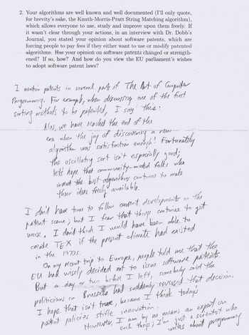

Knuth y el papel

No crean que he olvidado el problema del uso del papel. Lo que pasa es que me topé con la conferencia de Knuth, y no resistí traducirla y publicarla.
Pero también recordé un hecho peculiar sobre Knuth, y es que él no usa email. La explicación está en su sitio web en una de las preguntas frecuentes.
Por ejemplo, la imagen que acompaña este artículo es una de las respuestas que da Knuth a uncuestionario que se le envió y que fue publicado en la Free Software Magazine.
Noten el tipo de caligrafía, y de que manera coloca una cita que hace de su libro. Con un borde al lado izquierdo. Es que Knuth es un tipógrafo innato.
Además, Knuth no usa email, si quieres comunicarte con el debes enviarle una carta, por correo tradicional.
Su secretaria se encarga de acumular y clasificar su correspondencia. Además los correos que se envían a la cuenta del Art Of COmputer Programming, y a la cuenta que administra los bugs en TeX, son impresos por su secretaria y él los lee después.
Cuando un email impreso no es una sugerencia, o un error, entonces utiliza el papel para hacer pruebas de impresión de sus libros.
Pero lo mejor es el periodo de lectura. Knuth lee sus correos, que no sean urgente, una vez cada tres meses. De todas maneras uno puede enviarle un fax, pero el problema es que en este caso el los lee cada seis meses!!
Para justificar esto, cita a Umberto Eco:
“No tengo una dirección de correo electrónico. He alcanzado la edad en que mi principal propósito es no recibir mensajes” “I don’t even have an e-mail address. I have reached an age where my main purpose is not to receive messages.’ — Umberto Eco, quoted in the New Yorker”
Knuth dice:
El email es una cosa maravillosa para aquellas personas cuyo rol en la vida es estar encima de todo. Pero no para mi, mi rol es estar bajo las cosas. Lo que yo hago requiere de largas horas de concentración y estudio ininterrumpido. Trato de aprender ciertas áreas de la ciencia de la computación en forma exhaustiva; luego trato de hacer ese conocimiento digerible en una forma que sea accesible para gente que no tiene tiempo para tal estudio.
Gracias a Knuth, y muchos como él, que se encuentran en las capas más de base, como cimientos, es que podemos usar mejor el escaso tiempo que tenemos (por culpa del email :).
Me gusta su visión, de ubicarse en la base, en la parte más de abajo, dando soporte.
¿En que capa se ubican ustedes?